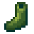

Calzature
Le Calzature sono un tipo di oggetti indossabili che forniscono un aumento a Difesa e/o Immunità. Le calzature si possono trovare o acquistate presso la Gilda degli Avventurieri. Tutte le calzature si possono vendere alla Gilda degli Avventurieri.
Le calzature possono essere su misura per trasferire le statistiche da un paio all'altro. L'articolo risultante nel menù si chiamerà "[nome della scarpa/stivale] su misura".
| Immagine | Nome | Descrizione | Statistiche | Fonte | Prezzo di acquisto | Prezzo di vendita |
|---|---|---|---|---|---|---|
| Scarpe da tennis | Un po' fragili... ma alla moda! |
|
||||
 |
Stivali di gomma | Protezione dagli elementi. |
|
N/A | ||
| Stivali di cuoio | Il cuoio è molto flessibile. |
|
||||
| Stivali da lavoro | Con punte di acciaio per una protezione extra. | N/A | ||||
| Stivali da battaglia | Rinforzati con maglia di ferro. |
|
||||
| Stivali da tundra | Il rivestimento di pelliccia tiene le caviglie al caldo. |
|
||||
| Scarpe del lepricauno | Le fibbie sono d'oro zecchino. | N/A | ||||
| Stivali termici | Progettati per le temperature estreme. |
|
N/A | |||
| Stivali da cowboy | Il massimo della moda campagnola. | Introvabili | N/A | N/A | ||
| Stivali oscuri | Fatti di spessa pelle nera. |
|
||||
| Stivali del camminafuoco | Si dice che possano reggere al magma incandescente. |
|
||||
| Scarpe del genio | Una curiosa energia ne permea la stoffa. |
|
N/A | |||
| Stivali spaziali | Una trama d'iridio dona loro una lucentezza violacea. |
|
||||
| Stivali magici di Emily | Confezionati con amore da Emily. Biodegradabili al 100%! |
|
N/A | |||
| Scarpe del clown di brace | Queste scarpe magiche appartenevano a un famoso giullare nanico. | |||||
| Stivali della sirena | Le scaglie di sirena danno a questi stivali un'aura protettiva. |
|
N/A | |||
| Stivali di squame di drago | Questi stivali lucenti sono estremamente robusti. |
|
N/A | |||
| Scarpe di cristallo | Queste scarpe scintillanti terranno i tuoi piedi al sicuro. |
|
N/A |
Storia
- 1.4: Aggiunte le Scarpe del lepricauno e gli Stivali magici di Emily.
- 1.5: Aggiunte Scarpe del clown di brace, Stivali della sirena, Stivali di squame di drago e Scarpe di cristallo.